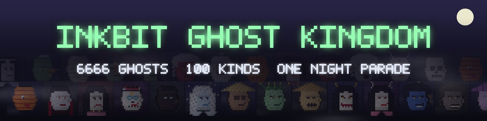
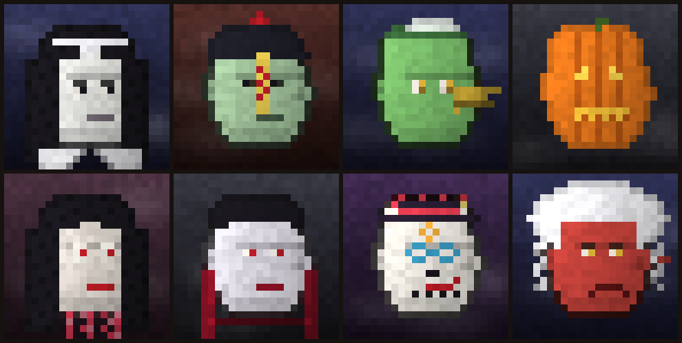

ELECTION SQUARE Election Night party opens 18:25 · free · 10 per wallet · 4,444 supportersTHE INK SEA All 5,555 Tides cards minted · 547 householdsINK VILLAGE All 2,999 Shinobi registered · 584 householdsDANGER ZONE All 3,333 Zombie Punks are outTHE ARENA Grand Champion is #536HOW TO PLAY Full Inkbit Tides rules on Inkbit NewsNOTICE Inkbit never DMs you to verify your walletELECTION SQUARE Election Night party opens 18:25 · free · 10 per wallet · 4,444 supportersTHE INK SEA All 5,555 Tides cards minted · 547 householdsINK VILLAGE All 2,999 Shinobi registered · 584 householdsDANGER ZONE All 3,333 Zombie Punks are outTHE ARENA Grand Champion is #536HOW TO PLAY Full Inkbit Tides rules on Inkbit NewsNOTICE Inkbit never DMs you to verify your wallet

District 10 · The Haunted Hills
Inkbit Ghost Kingdom
6,666 ghosts. 100 kinds. One night parade.
WHERE THEY CAME FROM
Not all the ink in the Kingdom stayed on the page. Some was spilled, some was smudged, some was simply forgotten. On the misty hills south of the Danger Zone, where the fog never lifts, that lost ink gets up again after dark.
Every night it walks in a long parade through the fog. The people of the Kingdom call it the Ghost Kingdom, and they keep their lanterns lit.
WHO THEY ARE
One hundred kinds of ghosts march in the parade, from folklore all over the world: Krasue and Mae Nak, Jiangshi and Yurei, Kappa and Tengu, Vampires and Mummies, Banshees, Catrinas and Gumiho. They belong to six clans: Thai, Southeast Asian, Japanese, Chinese, Western and World.
The parade has an order. At the front walks the Ghost Emperor, followed by three Underworld Judges, six Clan Kings, sixty-six Nobles and six hundred and sixty-six Royal Guards, every one of them glowing with an aura. Behind them come the Haunters, the Lesser Spirits and the Wanderers.
WHAT THEY DO
They walk the hills from dusk till dawn, carrying lanterns, candles and offerings. Who holds which rank stays hidden in the mist until the reveal.
GALLERY
Sample art · not linked to token numbers

CONNECTED STORIES
How Inkbit Ghost Kingdom fit into the Inkbit World
Three gates are still open, and all of them are free
Nov 3, 2026
The ghost parade on the Haunted Hills has grown to 5,545 of 6,666 ghosts, and joining is now free, ten per wallet, until November 4 at 20:00. Neon City has 2,350 citizens and is also free until November 4 at 11:43. Ink Street has hired 5,630 brokers in its free final round, which closes on November 6 at 11:56.
Elsewhere, the Danger Zone is full: all 3,333 Zombie Punks have shuffled out, into 418 households. The reprint at the old print shop has closed at 167 Apes.
Lanterns are going up on the Haunted Hills. Tonight at 20:00 the Inkbit Ghost Kingdom begins its night parade: 6,666 ghosts of one hundred kinds, from Krasue and Jiangshi to Kappa, Vampires and Catrinas.
The first half hour is free. After that the price climbs every hour, about $0.03, then $0.06, $0.09 and finally $0.12 until the parade ends at 05:00. Somewhere in the fog walk one Ghost Emperor, three Underworld Judges and six Clan Kings, and nobody will see their faces until the reveal.
The same night, the quarantine around the Danger Zone breaks. It is going to be a long night in the Kingdom.